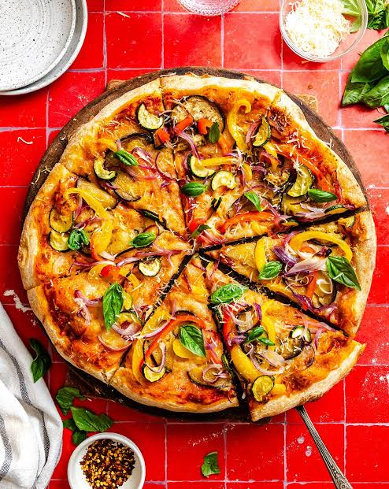

Chinese cuisine is an important part of Chinese culture, which includes cuisine originating from the diverse regions of China, as well as from Chinese people in other parts of the world. Because of the Chinese diaspora and historical power of the country, Chinese cuisine has influenced many other cuisines in Asia, with modifications made to cater to local palates. Chinese food staples such as rice, soy sauce, noodles, tea, and tofu, and utensils such as chopsticks and the wok, can now be found worldwide.

Pizza is one of the most loved foods in the world, originating from Italy before becoming a global favorite. At The Neon Crust, we celebrate this rich culinary history by combining classic wood-fired baking techniques with bold, modern twists. Whether you love traditional styles or want to try something completely unexpected, pizza is all about bringing people together over great flavors, crispy crusts, and perfectly melted cheese.
